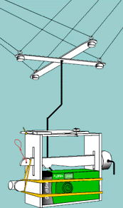

All About Digital Earth Watch—Part I: Digital Tools—Chapter 3
Getting Images: Kite and Balloon Aerial Photography
2016 update: since this chapter was written, use of drones has become more common. Although kites and balloons may still be used in aerial photography, drone (or UAV—unmanned aerial vehicle) technology may be more practical and satisfying to engage in. Much of the material in this chapter concerning the importance of lightweight imaging and sensing equipment also applies for UAVs. Here are two links for getting started in learning about UAVs:
Kite Aerial Photography has been used to document special events, dramatic landscapes and peoples’ yards since the 19th century. At Blue Hill Observatory in Milton Massachusetts, the history of kite use and other aeronautic endeavors is rich and diverse. In the 1880s kites were used to study electricity in the air in a manner much safer and more scientific than most peoples’ perception of the Ben Franklin experiment. In the 1890s through the 1920s kites at Blue Hill lifted cameras to survey the land. They also lifted meteorographs, which were devices to measure at least two, and up to 4, aspects of the weather and graph the information on to 24 hour charts. The most frequently flown meteorographs at Blue Hill measured temperature, humidity and altitude/air pressure. Some of the flights also measured wind speed. The average flights were 7,000 feet (about 2,000 meters) above mean sea level (MSL) from Blue Hill which is 635 feet above MSL.
 The record for a meteorograph flight at Blue Hill was 15,793 feet above MSL on July 19, 1900. In addition to measurements with kites, large helium balloons also lifted meteorographs. The problem with the balloons was that they frequently flew to places where no one found them. Since the 1930s, radiosondes (a.k.a. weather balloons) were used and there is now a network around the world which releases weather balloons which transmit the weather data back to the ground. From the 1960s through 1998 there were no kite or balloon research activities at Blue Hill.
The only valuable research data that a kite can aid in collecting in the 21st century in most of the world is visual imagery. Every continent has rules and regulations about how high a kite can be flown. For most of Europe and many other countries the law is 500 feet (160 meters) of line with an above ground height of no more than 200 feet (65 meters). This is the same rule at Blue Hill because we are close to Norwood Massachusetts airport and on a Logan Airport flight path. In most of the USA the above ground maximum kite height is 500 feet with a maximum line length of 1,000 feet. Although the weather changes even as you go just dozens of feet above the ground, the data under 500’ is not that valuable to researchers. It is a fun thing to measure with students to introduce or reinforce an understanding of the layers of air.

A kite meteorograph as William Eddy and other atmospheric scientists would use in the 1890s.
|
A wide range of modern temperature and humidity sensors including data loggers and graphing thermometers can be attached to a wide range of kites.
|

Sled kites are easy to build and fly very well.
There are several kits like these or many designs to build your own from scratch.
|
Simple to build sled kites can lift light instrument parcels. The very popular Frustrationless Flyer is one such sled kite that can be purchased at Blue Hill Observatory Science Center and kite stores around the nation.
|

Box Kite with meteorograph on summit of
Mount Washington N.H.
|
Other good lifters for light objects include the common kite styles Delta, Diamond, Box or Parafoil. To lift heavier instruments or cameras, larger more sophisticated kites are necessary.
There are many ways to do Kite Aerial Photography (KAP) with your students. The easiest is if there is a local kite enthusiast who does KAP and is willing do a demonstration. The letter in the back [WHAT LETTER????] is a good way to find a person in your area who could do that. More adventurous is to build your own camera rig and fly it from a commercially made kite which has enough power to lift the unit you built. The most adventurous is to also design and build the kite(s) to lift the camera rig.
|
|

|
For shutter release on cameras, you can set up a simple plunger from springs or rubber bands triggered from a separate string to the ground. Alternatively you can use the self-timer on the camera, or some cameras do time-lapse or other multiple picture taking. For a really exciting perspective, set the camera on video.
The most serious KAP enthusiasts and professionals use radio controlled camera rigs which not only have shutter releases but can also tilt and pan the camera. Some even control the camera zoom feature. There are instructions online and many kits or already built units you can buy.
|
Here are some of my favorite web sites for KAP kits, plans and assistance:
For a complete ready to buy blimp set up, visit: http://www.aerialproducts.com/aerial-photography/aerial-photography-systems-for-blimps.html. You can probably find a person who owns this system in your area and would come do shots for you.
The great benefit of kites, balloons, blimps and poles for aerial photography is that they allow close up imagery of the subject. It is especially fun and educational to compare the imagery from a low altitude (50 to 250 feet above ground) picture to satellite imagery of the same location. These low altitude images can be set up to match “pixels” of a satellite image. For analysis of vegetation health, you can put filters on the camera or use the computer to change the view/filtering. The varying methods of analysis are part of the technology component of this activity.
Kite or balloon aerial photography can be the focus of an exciting and challenging series of lessons spanning STEM education, art, history and literature. A sequence can start with a unit on Kites and Balloons including: History, Design, Aerodynamics, Construction, Flight. This can be followed by a sequence on Cameras including: History, Design, Construction, Photo Techniques, Production and use of images. Finally a sequence on Remote sensing tools might inlcude: Robot development, design and construction, wireless vs. connected remote control, methods of remote capture and transfer of information.
History
The first kite was developed over 2,600 years ago in Asia, most likely central or southern China. The materials used were silk for the sail (skin), bamboo for the frame (bones), and linen, cotton, silk or hemp for the rigging and flying line. The exact story is not known. My favorite version combines a couple of the different stories in to another version. You can find many versions and this is a great literature activity to compare and analyze the stories. Here is my version: There was a farmer tending his crops in a wide open field. The sun was strong so he wore a hat with a very large brim to protect him from the sun. A strong gust of wind blew the hat off his head. He grabbed the hat by the chin strap and it hovered on the wind. As he glanced at his hat, he saw a bird of prey hovering on the wind above the field. That gave the farmer an idea. He went and got some silk fabric, bamboo, glue and some string. He fashioned a model bird and attached string to it similar to the chin strap on his hat. He held the “Kite” (a bird of prey) aloft and let the wind take it. It spun and crashed to the ground. He watched the bird in the sky more closely. He then took his model and modified it to be more like the bird. He launched his new version and it flew for a moment before diving and crashing. With perseverance he fashioned a kite which would stay aloft and get to a reasonably high altitude.
For the next century, most kites looked like flying animals including bats, bees, birds, butterflies, dragonflies and other flying creatures copied from nature. Now kites can be fashioned to look like almost anything and successfully fly. One of the most humorous unique kites of the 20th century is one that looks like a toilet.
After discussing the creation of the kite you can move on to modern kites the students are familiar with. You can discuss the heritage of different kites the students name, the aerodynamics and how that kite is similar and different from the first kites. This can then lead to how kites have been used over the centuries.
Today's Technology
When it comes to lifting, kites have carried banners, whistles and musical ribbons, humans, cameras, audio equipment and much more. The technology used for most Kite Aerial Photography (KAP) today was developed in the 1980s and has been perfected constantly since then. How large and powerful a kite has to be for KAP depends on many factors. A good engineering activity to do with the students is to determine what those factors are. The key ones are: weight of the camera and rigging; strength of the wind, turbulence and other wind characteristics at the flying sight; a single or multiple kites; the desired altitude for photography. The students should be able to come up with many others including things like stability, wind direction, weight and type of kite line….
When you know the challenges, you can then design and build your “camera platform”. The platform is the kite(s) and the camera rigging which make it possible for the camera to go aloft and take pictures. For a self-contained shutter release camera with a string harness to hold it, the kite needed for lifting can be very simple. To have each student build their own kite which can then be a component of the flight platform, a train of Eddy kites or a gang of sled kites works well. If you gather the materials yourself, Sleds or Eddy kites which will develop enough power when combined with others can be built for less than $1.00 each. You can buy ready made kits from several companies for slightly higher prices depending on the size, quantity and materials they are made of. Students can each build a single kite which is powerful enough to lift a light rig. As the kites get larger the time and cost do go up. A four foot tall Eddy or other diamond kite or a Rokkaku can be built with plastic sail material and wooden dowels for spars at a cost of under $5.00. These are relatively simple to build and the design can be modified for each student to experiment and further the STEM lessons directly related to the design and construction of the kite.
To lift a more complex camera rig, a more powerful kite or series of kites will be needed. You could train or gang the 4’ diamonds or rokkakus or build a larger kite. Scaling kites up is a great way to teach ratios, proportions, structural dynamics and more. Larger kites need stronger materials, better construction and attachment methods and more safety measures on the kite flying field. A great resource to add to the class room lessons of the kite designing and construction is Kites in the Classroom by Glenn Davison and others from the American Kitefliers Association. http://www.aka.kite.org/data/download/pdf/Manuals/kitc.pdf
Also interesting and helpful is Peter Batchelor’s thesis project at
http://www.aka.org.au/kites_in_the_classroom/index.htm
If you feel overwhelmed by doing it on your own, there are many kite fliers all over the world who love to share the sport and get more people involved. Many will come to your class and assist free of charge. There are others who have made it a career or second income and will provide a wide range of educational kite activities for a fee.
When designing kites from a pattern or book, the students will improve measuring skills,
Although all text is from my memory, that brain got filled from many sources including: (Pelham, 1976), (Hart, 1967), (Eden, 1989)
UPDATES
2012 May 1 - The Public Laboratory for Open Technology and Science
have been working hard to make imagery collection easy, cheap and
accessible. Their grassroots mapping work is based on the idea that
citizens anywhere should be able to explore the environment in and
around their communities, by collecting their own imagery and other
data, and to do it in a way that is useful for scientific and social
purposes.
The Public Laboratory has developed an open source balloon mapping toolkit
that allows anyone with an inexpensive digital point and shoot camera,
and about $100 of other parts (balloon, helium, line, soda bottle, etc.)
to take photos of the ground around them. They also provide a web-based
tool called MapKnitter for aligning the photos into a georeferenced image that can be used in Google Earth and other digital mapping tools.
|


{kind=link}